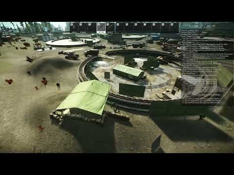

RUAF Come Home!
- Downloads
- 28,484
- Favourites
- 55
- Mod lists
- 145
Fika has been tested and is supported by both this and UNTAR Go Home, my other faction mod. Make sure this and all dependencies are correctly installed on the host, connecting players, and headless if you use that. Also make sure WTT Common Lib is updated to the latest version that supports Fika. When you do all that, things should work properly!
RUAF Come Home! adds RUAF as a proper faction to SPT. Encounter patrolling squads of soldiers. They have orders to shoot USEC on sight, so be careful! If you’re a BEAR, they’ll show you more tolerance, but keep your distance.
INSTALL INSTRUCTIONS
Download the .7z file. Unzip in your SPT install directory. Play SPT!
Note for Fika
The client-side portion of this mod and its dependencies are required on all connecting clients, the host, and headless if you are using that. Make sure everyone has the plugin and patcher correctly installed before using on Fika.
RUAF Come Home! requires BigBrain, MoreBotsAPI, and WTTCommonLib to run. Waypoint is not required currently but recommended. I also recommend SAIN for enhancing the combat behavior of the RUAF bots and for configuring their characteristics. There is also support for Couturier, using some clothes from that mod!
Note on uninstalling when using SAIN
Seems I found what causes a non-aggression bug, at least with SAIN and my bot mods. If you uninstall a custom bot mod that uses MoreBotsAPI then SAIN will keep references to the now-removed bots in its Default Bot Config Values folder, causing client errors that prevent SAIN from loading properly for bots and disabling their combat behaviors. Deleting the files in this folder and letting SAIN reset them fixes the problem.
Features
RUAF Come Home adds completely custom bot types that don’t replace existing bots, each with their own loadouts and roles. They are neutral to BEAR, giving warnings to anyone who strays too close and only firing when ignored or fired upon. Meanwhile, if you’re USEC, expect to be fired upon. They don’t take kindly to tourists. Also scavs, they hate scavs.
RUAF Rifleman
Your typical rifleman, equipped with an AK-74M. They make up the bulk of RUAF units.
RUAF Senior Rifleman
An NCO or Junior NCO in charge of a squad of RUAF soldiers. They’re equipped with the most recent equipment being fielded by RGF, using AK-12s, modernized kits for the AK-74M, and UBGLs.
RUAF Autorifleman
Soldier equipped with an RPK-16 to give mobile fire support. Capable of laying down suppressive fire so the rest of the unit can move. Uses 45-round RPK mags and 95-round drum mags.
RUAF Machinegunner
The autorifleman’s bigger brother, packing a PKM or PKP. Be very careful when you take on a RUAF squad that has one of these, or you’ll be swiss cheese.
RUAF Marksman
Capable of suppressing and eliminating threats to the RUAF squad before they become a problem. They’re equipped with the SVD-S with scopes, making them a priority target if you want to be able to flee without getting shot in the back.
Patrols can spawn across several maps in randomly generated patrols at random times during the raid. Their size and composition varies, with a specialized role mixed in with every few rifleman, and always lead by a senior rifleman who can use UBGLs.
Maps
Settings related to patrols can be adjusted in the config/main.json server file. This includes adding new maps and zones!
Patrols will pick a random available spawn zone found in the config file and a time in a defined range. Maps can be configured to have multiple patrols rolled (which also means you can encounter multiple patrols in one raid).
These checkpoints spawn at the start of the raid in areas affiliated with RUAF, typically near or at extracts. You might have to change your exfil route if you were planning on an easy escape! Config settings allow you to add your own checkpoints or edit existing ones.
- Quests from multiple traders and services through Prapor. Quests will change RUAF aggression and hostility with both the player and other factions (vanilla and my mods).
- GRU Spetznaz squads that hunt down USECs and other factions, depending on what questlines you complete.
-

Not specific to this mod, but related things I want to work on that you might like if you enjoy my faction mods:
- Dialogue mod. I don’t want to spoil too much since I still need to do some prototyping to make sure it’s feasible, but there will be integration with my other mods if it is.
Config
The config folder in the server mod lets you configure things such as patrol spawning and supported maps. Adjust the conditions for different roles to spawn in patrols or add the chance for patrols to spawn on other maps. I’ll add detailed explanations of the config options later but they’re fairly self-explanatory at the moment.
Compatability
These bots function with SAIN and through the MoreBotsAPI there is support for customizing the bots characteristics like you would other bot types.
Should work with most spawn mods as long as they don’t override boss spawns that aren’t vanilla. My previous UNTAR mod was tested with ABPS and MOAR and it worked with those. I haven’t tested with any of the new 4.0.0 spawn mods so let me know if there are incompatabilities I might be able to address.
Also, if you disable bosses in any way these bots won’t spawn. They use the vanilla boss spawn system.
Credits and Thanks
Thanks to GrooveypenguinX and nameless___ for letting me reference yalls code, and specifically Groovey for giving me the run down on what I needed to do to get custom bots working. This mod wouldn’t exist without that starting point.
Thanks to Solarint for making a mod I felt was necessary to have compatability for before publishing this mod. No, seriously, SAIN is amazing and if you don’t already have it installed give it a look.
Thanks DrakiXYZ for BigBrain, absolutely necessary mod for anything bot-related. The less I have to touch Big Silly Goose’s code the better lmao.
Goes without saying that thanks should be given to the SPT team for enabling any of this in the first place. Yall rock!
Support Me!
Buy me a Java Monster so I can fix my broken releases faster after I get back home from work. Or don’t, I’ll still do it for free. https://ko-fi.com/tacticaltoaster
Version
1.1.2
1.1.2 Spawn Fixes for ABPS
Spawn fixes targeted at better ABPS compatibility
Version
1.1.1
1.1.1
Fully reinstall if you’re running into issues with game not starting after updating versions. The folder structure/names did change from 1.0.X versions.
- Fixed 6b45 related errors
- Adjusted pocket loot of remnants
- Patrol stance for checkpoint behaviors
Version
1.1.0
1.1.0
Fully delete last version of the mod before updating to this version.
- Added small quest line.
- Added backport and WTT Armory as a dependency, with RUAF now using 1.0 gear and customization.
- RUAF will aggro for three raids after player kills any RUAF members.
- Added new secret faction connected to RUAF. There are consequences to targeting RUAF…
- Rogues will sometimes hunt RUAF on maps they spawn, while RUAF will sometimes hunt down Rogues on Lighthouse.
- Balance adjustments.
Version
1.0.1
Fika compatability tested for latest Fika version, make sure you install this mod alongside the dependencies correctly for all clients, the host, and headless.
Download the new hotfix for MoreBotsAPI alongside this. That will fix the dying bug, and this update will fix the agression/retaliation issues when you shoot at RUAF bots and they don’t shoot back.
(There may still be orange warnings about loading types, there are no problems being caused and it’s just a debug message I have to remove)
Dependencies
Version
1.0.0
Initial release. Contains similar features to UNTAR Go Home! (patrols and checkpoints) alongside more varied squad member types.